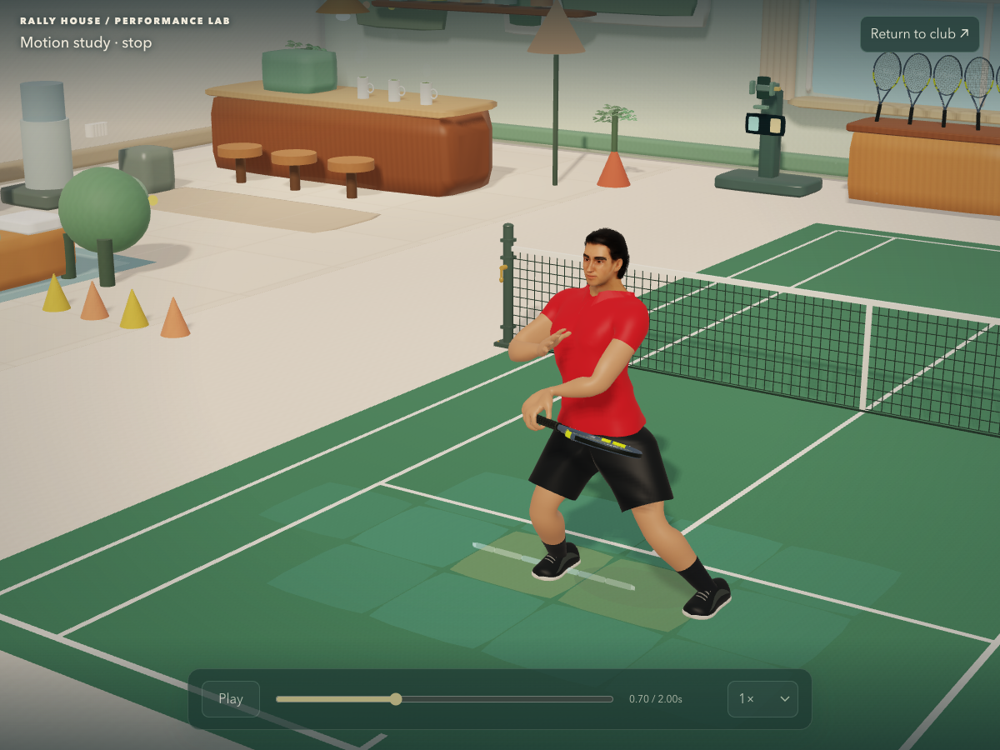
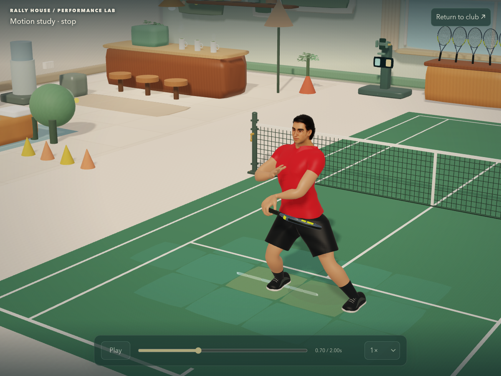

RALLY HOUSE / MOTION STUDY · NOV 26
Finish the step.
The raised foot now settles onto the court when movement stops, even while the swing continues. If you move again mid-landing, the next step starts from the visible shoe position.
Play the local build ↗ · Earlier motion improvements
Matched playback
Same character, camera and movement commands. Each recording includes normal speed, quarter speed and paused frames.
Before · 6ae0bb3e · deployed baselineAfter · 160 ms landing
After the stop · 0.70 seconds

Before: the receiving shoe is still raised.
After: the receiving shoe has landed.Restart before the landing finishes
Reverse direction during the landing. The character responds immediately while the shoe starts its new step from its current position.
BeforeAfter
Mobile-sized WebKit replay
402 × 874 desktop WebKit viewport. This is not physical iPhone validation.
Verification and limits
Seven focused test suites pass, including 48 stop/restart cases. Twelve deterministic rally traces match the previous build exactly across 19,854 frames and 187 contacts. The animation change does not alter the checked ball, contact, input-cue or scoring states.
Both shoes land within 160 ms of stopping, with no horizontal foot drift during the landing. Movement restarts on its first frame. This is a procedural landing improvement; the wider animation system still has its existing limits during abrupt reversals and extreme reaches.
Detailed results · Live gameplay and replay recording